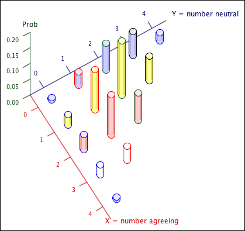

Generalising Bernoulli trials
The binomial distribution arose from a collection of \(n\) independent trials, each of which had two possible values that we called success and failure. We now extend this to situations in which each trial may have three or more possibilities.
Definition
If the following conditions hold:
then the total numbers of occurrences of the different outcomes, \((X_1, X_2,\dots, X_g)\), have a multinomial distribution with parameters \(n, \pi_1, \dots, \text{ and }\pi_g\),
\[ (X_1, X_2,\dots, X_g) \;\; \sim \;\; \MultinomDistn(n, \pi_1, \dots, \pi_g) \]Note here that
\[ \sum_{i=1}^g X_i \;=\; n \spaced{and} \sum_{i=1}^g {\pi_i} \;=\; 1 \]When \(g = 2\), \(X_1\) and \(X_2\) are the numbers of successes and failures in a binomial experiment — essentially univariate.
When \(g = 3\), the situation is essentially bivariate since \(X_3 = n - X_1 - X_2\) is completely determined by the values of \(X_1\) and \(X_2\).
Joint probability function
If \((X_1, X_2,\dots, X_g)\) have a \(\MultinomDistn(n, \pi_1, \dots, \pi_g)\) distribution, then their joint probability function is
\[ p(x_1, x_2, \dots, x_g) = \frac{n!}{x_1!\;x_2!\; \cdots,\;x_g!} \pi_1^{x_1}\pi_2^{x_2}\cdots \pi_g^{x_g} \]provided
\[ x_i=0, 1, \dots, n, \quad\text{for all }i \spaced{and}\quad \sum_{i=1}^g {x_i} = n \]but is zero for other values of the \(\{x_i\}\).
(Proved in full version)
We now give a numerical example.
Opinion poll
Consider a public opinion poll in which people are asked for their opinion about a new piece of legislation. Three possible responses are possible, with
P(Agree) = 0.3,
P(Neutral) = 0.4
P(Disagree) = 0.3
If \(n\) individuals are randomly chosen and their responses are independent, the numbers giving the three responses will have a \(\MultinomDistn(n, 0.3, 0.4, 0.3)\) distribution.
The joint probability function can be written as
\[ p(x_1, x_2, x_3) = \frac{n!}{x_1!\;x_2!\; (n-x_1-x_2)!} {0.3}^{x_1}{0.4}^{x_2}{0.3}^{n-x_1-x_2} \]The diagram below shows these probabilities in a 3-dimensional bar chart when \(n = 4\). Note that we can ignore \(x_3\) here since \(x_3 = 4 - X_1 - x_2\) — it is effectively a bivariate situation.

Note that \(X_1\) and \(X_2\) are not independent. For example, knowing that \(X_1=3\) people agree tells us that \(X_2\) must be either 0 or 1 since the sample size is only 4.